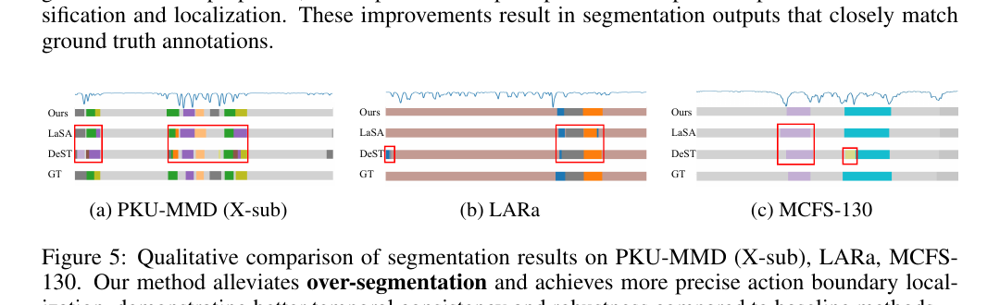

ICLR 2026 · CO-FIRST AUTHOR
特征需求可以冲突，
任务目标仍然能够互相帮助。
骨骼时序动作分割既要保证段内分类稳定，又要对动作切换保持敏感。CurvSeg 先用专家解耦冲突，再用几何曲率恢复协同。
63.6 → 65.5PKU-MMD X-sub · F1@50 +1.9
EDD + CGS双专家解耦 + 曲率引导协同
Privacy-aware骨骼输入弱化外观和身份信息
关键不是“要不要解耦”，而是解耦后如何重新交流
CLASSIFICATION需要时间不变性
同一动作内部的姿态变化不应导致类别不断抖动。
LOCALIZATION需要时间敏感性
边界附近的细微变化必须被放大，才能准确找到切换时刻。
FAILURE彻底解耦形成信息孤岛
知道“正在做什么”本应帮助判断“何时结束”，但独立分支切断了这类互补信息。
曲率把分类空间的几何结构变成定位信号
EDD双专家加权
在空间与时间维度分别保留分类稳定性和定位细节，避免用一套共享特征硬扛冲突。
CURVATURE几何边界先验
良好分类空间中，段内轨迹受类别簇约束呈高曲率，转场处出现曲率谷值。
SYNERGY双向闭环
曲率帮助定位；更准确的边界又反向约束分类表征，形成正反馈。
Case：减少过分割，并把边界放回正确位置

ICLR 论文 Figure 5：在 PKU-MMD、LARa 与 MCFS-130 上，CurvSeg 的分割结果更贴近 GT，红框处可见过分割减少、边界更准确。蓝线分类特征的曲率序列；谷值为潜在动作转折提供几何线索。
彩色条带不同颜色代表动作段。相比 LaSA、DeST，Ours 与 GT 的段数和边界更一致。
可迁移理解面对多任务冲突，不是简单共享或彻底隔离，而是寻找能跨任务传递的中间结构。
一句话讲法：我的贡献是找到“曲率”这个可解释的接口，让分类和定位从两个独立 head 变成能够互相校正的系统。
下一项：把高级能力整合进统一基模蚂蚁 V3 合训 →